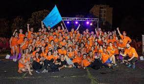

Személyzet
A Teso munkatársak
A Tábori Együttélést Segítő Operatív munkatársak (TESO-k) az izgalmas tábori programok megvalósításában segédkeznek. Fő feladatuk a táborozó gyermekek aktív foglalkoztatása, a napi programok előkészítése, valamint lebonyolítása. Ők az Erzsébet Táborok táboroztatási program narancssárga pólós, szuperhős-csapatának tagjai, akik azért dolgoznak, hogy minden ottalvós Erzsébet-táborba érkező gyermek csodálatos élményekkel gazdagodjon. A TESO-k többek között ismeretterjesztő és kézműves foglalkozásokat tartanak, sportbajnokságokat, ügyességi versenyeket és tréfás játékokat rendeznek, kreativitásukkal és lelkesedésükkel színesebbé teszik a tábor életét, és mindenben segítenek, amiben csak tudnak.



| Teso munkatársak | ||
|---|---|---|
| Hány Fő? | 15-20 fő | |
| Milyen színű polóba jelenhetnek meg? | Narancssárga | |
| Milyen korosztály | 20-35 évesek |